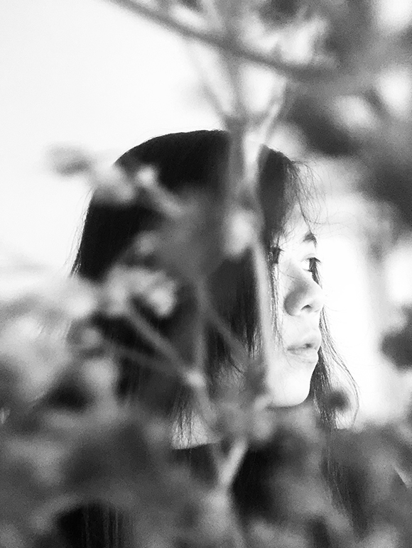

About Me
Hello, my name is Tina Octaviani and I am from Indonesia, and this will be my 1st year at Algonquin College enrolled in Interactive Media Design even though I don't know anything about coding, CSS and HTML. I enjoy exploring many forms of art, such as digital illustration, calligraphy, food sculpture, photography, and crafts. My online creative process journal is in Behance and Instagram.
When I was a child, I was always fond of how pretty magazines and book covers look. Since then, I dreamed that one day I would be able to make pretty things that matter to many people. Before I went to Algonquin College, I completed a degree in Design Communication. I got a taste of the industry, in which the majority of projects done used print media.
The secret of getting ahead is getting started. -Mark Twain